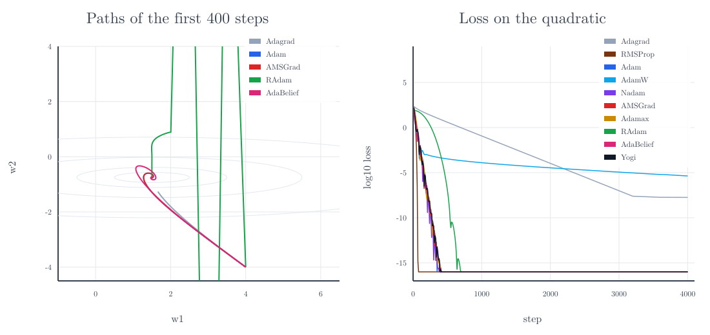
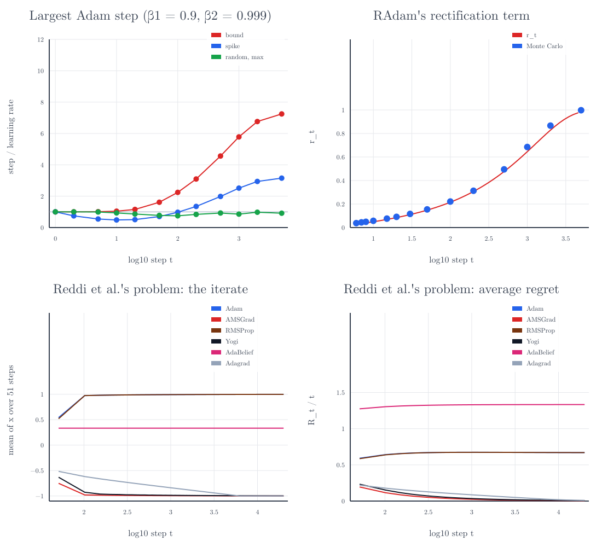
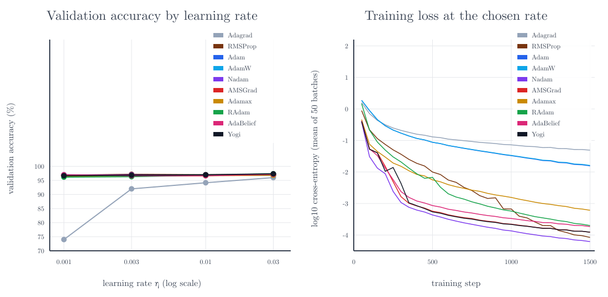

Adaptive Optimizers: Adagrad to Yogi, Step Bounds and Counterexamples
Abstract
Adaptive optimizers divide each coordinate's step by a running estimate of its gradient scale. This report checks seven built-in rules against TensorFlow's kernel formulas and their first updates against closed forms. It adds three newer rules, RAdam, AdaBelief and Yogi, which agree with hand-written references to \(10^{-12}\). A Cauchy–Schwarz argument gives the exact largest Adam step. With the default \(\beta_1=0.9\), \(\beta_2=0.999\) it grows to 7.27 learning rates, more than twice the value 3.16 usually quoted. Adam reaches it exactly on the extremal gradient history. RAdam's rectification term tracks the Monte Carlo ratio it approximates to within 7% from step 20 on, and is more conservative in the first steps. On Reddi, Kale and Kumar's online problem, Adam and RMSProp converge to the worst point, while AMSGrad, Yogi and Adagrad find the optimum. AdaBelief with \(\beta_1=0\) cycles with exactly the regret 4/3 that its vanishing "belief" term predicts. On the digits data, all ten rules reach 96–97% validation accuracy at their best learning rate. They differ in speed and sensitivity to the learning rate, not in final accuracy.
The problem
Plain gradient descent uses one learning rate for every coordinate. When gradients differ in scale across coordinates or over time, that rate is too large for some and too small for others. Adaptive methods divide each coordinate's step by a running estimate of the gradient's magnitude:
- Adagrad uses the sum of squares (Duchi, Hazan and Singer, 2011);
- RMSProp uses an exponential average (Tieleman and Hinton, 2012);
- Adam adds momentum and bias correction (Kingma and Ba, 2015).
Many variants followed. Some fix a flaw in Adam's theory (AMSGrad; Reddi, Kale and Kumar, 2018). Others decouple weight decay (AdamW; Loshchilov and Hutter, 2019), change the momentum (Nadam; Dozat, 2016) or the denominator (Adamax; Yogi, Zaheer et al., 2018; AdaBelief, Zhuang et al., 2020), or replace learning-rate warm-up (RAdam; Liu et al., 2020).
This report replaces the original example examples/nn/0_foundations/0.3_optimizers_and_training_loop/adaptive_optimizers.cpp. That example compared Adagrad, RMSProp and Adam with TensorFlow's fused-kernel formulas and checked the first update of all seven built-in rules, AMSGrad's envelope, Adamax's decay and AdamW's decoupled decay. It then fitted an anisotropic quadratic with each rule. All of that is kept.
Added are RAdam, AdaBelief and Yogi with their analysis functions, in datamunge/nn/adaptive_variants.hpp, together with an exact bound on Adam's step, checks of RAdam's and Reddi et al.'s theory, and a dataset.
The method
The Adam family
For a gradient \(g_t\), Adam keeps \(m_t=\beta_1m_{t-1}+(1-\beta_1)g_t\) and \(v_t=\beta_2v_{t-1}+(1-\beta_2)g_t^2\). It corrects their bias towards the zero start and steps
On the first step \(\hat m_1/\sqrt{\hat v_1}=\mathrm{sign}(g_1)\), so every coordinate moves by \(\eta\). The variants change one ingredient each:
- AdamW subtracts \(\eta\lambda\theta\) separately;
- AMSGrad divides by the running maximum of \(v_t\), which never decreases;
- Adamax replaces \(\sqrt{v_t}\) by \(u_t=\max(\beta_2u_{t-1},|g_t|)\);
- Nadam applies a scheduled Nesterov look-ahead to the momentum;
- RMSProp has no momentum and no bias correction;
- Adagrad accumulates \(\sum g_t^2\) without forgetting.
AdaBelief divides by \(s_t=\beta_2s_{t-1}+(1-\beta_2)(g_t-m_t)^2+\epsilon\), the spread of the gradient around its running mean. Steady gradients give a small \(s_t\) and large steps. Yogi updates \(v_t=v_{t-1}-(1-\beta_2)\,\mathrm{sign}(v_{t-1}-g_t^2)\,g_t^2\), which moves \(v\) towards \(g_t^2\) by an amount limited by \(g_t^2\) rather than by \(v\). The denominator therefore cannot collapse as quickly after a burst of large gradients.
How large can an Adam step be?
Kingma and Ba note that the step is "approximately bounded" by \(\eta(1-\beta_1)/\sqrt{1-\beta_2}\), which is 3.16 for the defaults, the value of a single large gradient after a long quiet period. The exact bound follows from the Cauchy–Schwarz inequality. Write \(m_t=(1-\beta_1)\sum_ia_ig_i\) and \(v_t=(1-\beta_2)\sum_ib_ig_i^2\) with \(a_i=\beta_1^{t-i}\) and \(b_i=\beta_2^{t-i}\). Then \(|\sum a_ig_i|\le\sqrt{\sum a_i^2/b_i}\sqrt{\sum b_ig_i^2}\), so
with equality for \(g_i\propto(\beta_1/\beta_2)^{t-i}\), a gradient growing geometrically towards step \(t\). For \(\beta_1^2<\beta_2\) the limit is \((1-\beta_1)/\sqrt{(1-\beta_2)(1-\beta_1^2/\beta_2)}\), which nn::adam_step_bound evaluates for any \(t\).
RAdam's rectification
Early in training \(v_t\) averages only a few squared gradients, so the adaptive learning rate \(\psi_t=\sqrt{(1-\beta_2^t)/v_t}\) has a large variance. In the first step it is \(1/|g_1|\), whose variance is infinite for Gaussian gradients. Liu et al. approximate \(\psi_t^2\) by a scaled inverse \(\chi^2\) variable with \(\rho_t=\rho_\infty-2t\beta_2^t/(1-\beta_2^t)\) degrees of freedom, \(\rho_\infty=2/(1-\beta_2)-1\). They multiply the step by
and use plain bias-corrected momentum while \(\rho_t\le5\), where the variance does not exist. For \(\beta_2=0.999\) that is the first five steps.
Reddi et al.'s counterexample
Reddi, Kale and Kumar (2018) showed that Adam can fail on a convex online problem. On \(x\in[-1,1]\), the loss is \(f_t(x)=Cx\) when \(t\bmod3=1\) and \(-x\) otherwise, with \(C>2\). The average gradient \((C-2)/3\) is positive, so the best fixed point is \(x=-1\). With \(\beta_1=0\) and \(\beta_2=1/(1+C^2)\), the large gradient is quickly forgotten by \(v_t\), and Adam takes two steps of almost full size towards \(+1\) for every damped step towards \(-1\). It converges to \(x=+1\), the worst point. AMSGrad's non-decreasing denominator prevents this. The regret \(R_T=\sum_tf_t(x_t)-f_t(-1)\) measures the damage: an algorithm that converges to the optimum has \(R_T/T\to0\).
Simple examples
Kernel formulas, first updates, envelopes and a quadratic
The program applies 40 updates of a changing gradient stream to three coordinates and compares Adagrad, RMSProp and Adam with the update formulas of TensorFlow's kernels. It checks every rule's first update from \(w=(1,-2)\) with gradient \((3,-4)\) against its closed form. It follows AMSGrad's and Adamax's state after a single gradient pulse and AdamW's weights under zero gradients. Finally, it minimises \(L=(w_1-1.5)^2+30(w_2+0.75)^2\) from \((4,-4)\) with every rule for 4000 steps. The learning rate is 0.1, then 0.01 after 3200 steps and 0.001 after 3600, and AdamW uses decay 0.01.
#include <dm/dm.hpp>
namespace nn = dm::nn;
using nn::Tensor;
using Kind = nn::OptimizerKind;
using dm::graphics::RGB;
const auto F64 = nn::DType::Float64;
// One optimizer behind a common interface: the built-in kinds and the AdaptiveOptimizer rules.
struct AnyOpt {
std::string name;
std::function<void(const std::vector<Tensor>&)> step;
std::function<void(double)> set_lr;
};
AnyOpt make(const std::string& which, std::vector<Tensor> params, double lr, double weight_decay = 0.0) {
const std::vector<std::pair<std::string, Kind>> builtin{{"Adagrad", Kind::Adagrad}, {"RMSProp", Kind::RMSProp}, {"Adam", Kind::Adam}, {"AdamW", Kind::AdamW},
{"Nadam", Kind::Nadam}, {"AMSGrad", Kind::AMSGrad}, {"Adamax", Kind::Adamax}};
for (const auto& [n, k] : builtin)
if (n == which) {
nn::OptimizerConfig cfg;
cfg.kind = k;
if (k == Kind::AdamW) cfg.weight_decay = weight_decay;
auto o = std::make_shared<nn::Optimizer>(params, lr, cfg);
return {which, [o](const std::vector<Tensor>& g) { o->step(g); }, [o](double r) { o->set_learning_rate(r); }};
}
const auto rule = which == "RAdam" ? nn::AdaptiveRule::RAdam : which == "AdaBelief" ? nn::AdaptiveRule::AdaBelief : nn::AdaptiveRule::Yogi;
auto o = std::make_shared<nn::AdaptiveOptimizer>(params, lr, nn::AdaptiveConfig{.rule = rule});
return {which, [o](const std::vector<Tensor>& g) { o->step(g); }, [o](double r) { o->set_learning_rate(r); }};
}
// Draws a polyline clipped to the box [x0, x1] × [y0, y1] (Liang–Barsky on each segment); the label goes on the first piece.
void clipped_lines(dm::graphics::RPlot& pl, const std::vector<double>& x, const std::vector<double>& y, double x0, double x1, double y0, double y1,
const std::string& label, RGB color, double width) {
std::vector<double> cx, cy;
bool labelled = label.empty();
auto flush = [&] {
if (cx.size() >= 2) {
if (!labelled) pl.lines(cx, cy, label, color, width), labelled = true;
else pl.lines(cx, cy, color, width);
}
cx.clear(), cy.clear();
};
for (std::size_t i = 0; i + 1 < x.size(); ++i) {
const double dx = x[i + 1] - x[i], dy = y[i + 1] - y[i];
double t0 = 0, t1 = 1;
bool keep = true;
for (auto [p, q] : {std::pair{-dx, x[i] - x0}, {dx, x1 - x[i]}, {-dy, y[i] - y0}, {dy, y1 - y[i]}}) {
if (p == 0) { if (q < 0) keep = false; continue; }
const double r = q / p;
if (p < 0) t0 = std::max(t0, r); else t1 = std::min(t1, r);
}
if (!keep || t0 > t1) { flush(); continue; }
const double ax = x[i] + t0 * dx, ay = y[i] + t0 * dy, bx = x[i] + t1 * dx, by = y[i] + t1 * dy;
if (cx.empty() || cx.back() != ax || cy.back() != ay) { flush(); cx.push_back(ax), cy.push_back(ay); }
cx.push_back(bx), cy.push_back(by);
if (t1 < 1) flush();
}
flush();
}
const std::vector<std::string> names{"Adagrad", "RMSProp", "Adam", "AdamW", "Nadam", "AMSGrad", "Adamax", "RAdam", "AdaBelief", "Yogi"};
const std::vector<RGB> colors{{148, 163, 184}, {120, 53, 15}, {37, 99, 235}, {14, 165, 233}, {124, 58, 237}, {220, 38, 38}, {202, 138, 4}, {22, 163, 74}, {219, 39, 119}, {17, 24, 39}};
int main() {
std::filesystem::create_directories("build");
// 1. Agreement with the fused-kernel formulas of TensorFlow (ApplyAdagradV2, ApplyRMSProp, ApplyAdam) over 40 updates
// of a changing gradient stream, epsilon 1e-4 so that its placement matters, learning rate 0.03 then 0.01.
std::print("| rule | max abs(library − kernel formula) over 40 updates |\n| :--- | ---: |\n");
for (Kind kind : {Kind::Adagrad, Kind::RMSProp, Kind::Adam}) {
Tensor w = nn::from_vector(std::vector<double>{1, -2, 0.5}, {3});
w.requires_grad_();
nn::OptimizerConfig cfg;
cfg.kind = kind, cfg.epsilon = 1e-4;
nn::Optimizer opt({w}, 0.03, cfg);
std::vector<double> ref{1, -2, 0.5}, first(3, 0.0), second(3, kind == Kind::Adagrad ? 0.1 : 0.0);
double worst = 0;
for (int t = 1; t <= 40; ++t) {
const std::vector<double> g{t % 3 == 0 ? 2.0 : -0.2, t % 4 == 0 ? 0.0 : 0.005, 0.0};
const double lr = t < 20 ? 0.03 : 0.01;
opt.set_learning_rate(lr);
opt.step({nn::from_vector(g, {3})});
const double b1p = std::pow(cfg.beta1, t), b2p = std::pow(cfg.beta2, t);
for (int i = 0; i < 3; ++i) {
if (kind == Kind::Adagrad) second[i] += g[i] * g[i], ref[i] -= lr * g[i] / (std::sqrt(second[i]) + cfg.epsilon);
else if (kind == Kind::RMSProp) second[i] += (g[i] * g[i] - second[i]) * (1 - cfg.rho), ref[i] -= lr * g[i] / std::sqrt(second[i] + cfg.epsilon);
else {
const double lr_t = lr * std::sqrt(1 - b2p) / (1 - b1p), eps_hat = cfg.epsilon * std::sqrt(1 - b2p);
first[i] += (g[i] - first[i]) * (1 - cfg.beta1), second[i] += (g[i] * g[i] - second[i]) * (1 - cfg.beta2);
ref[i] -= lr_t * first[i] / (std::sqrt(second[i]) + eps_hat);
}
}
const auto got = w.to_vector<double>();
for (int i = 0; i < 3; ++i) worst = std::max(worst, std::abs(got[i] - ref[i]));
}
std::print("| {} | {:.1e} |\n", nn::optimizer_name(kind), worst);
}
// 2. The first update from gradient (3, −4) at learning rate 0.1, against its closed form.
std::print("\nFirst update from w = (1, −2) with gradient (3, −4), learning rate 0.1 (AdamW with decay 0.1):\n\n| rule | w after one step | closed form | difference |\n| :--- | :--- | :--- | ---: |\n");
for (const auto& name : names) {
Tensor w = nn::from_vector(std::vector<double>{1, -2}, {2});
w.requires_grad_();
auto o = make(name, {w}, 0.1, 0.1);
o.step({nn::from_vector(std::vector<double>{3, -4}, {2})});
std::vector<double> cf(2);
for (int i = 0; i < 2; ++i) {
const double g = i == 0 ? 3 : -4, w0 = i == 0 ? 1 : -2;
double d;
if (name == "Adagrad") d = g / (std::sqrt(0.1 + g * g) + 1e-8);
else if (name == "RMSProp") d = g / std::sqrt(0.1 * g * g + 1e-8);
else if (name == "Nadam") {
const double mu = 0.9 * (1 - 0.5 * 0.96), mu1 = 0.9 * (1 - 0.5 * 0.96 * 0.96);
d = (1 + mu1 * 0.1 / (1 - mu * mu1)) * g / (std::abs(g) + 1e-8);
} else if (name == "RAdam") d = g; // rho_1 = 1 <= 5: plain bias-corrected momentum
else if (name == "AdaBelief") d = g / (std::sqrt((0.001 * 0.81 * g * g + 1e-8) / 0.001) + 1e-8);
else d = g / (std::abs(g) + 1e-8) + (name == "AdamW" ? 0.1 * w0 : 0.0);
cf[i] = w0 - 0.1 * d;
}
const auto got = w.to_vector<double>();
std::print("| {} | ({:.6f}, {:.6f}) | ({:.6f}, {:.6f}) | {:.1e} |\n", name, got[0], got[1], cf[0], cf[1], std::max(std::abs(got[0] - cf[0]), std::abs(got[1] - cf[1])));
}
// Reset two parameters and their optimizer history before zero-gradient updates.
for (auto kind : {Kind::Adagrad, Kind::RMSProp, Kind::Adam, Kind::AdamW,
Kind::Nadam, Kind::AMSGrad, Kind::Adamax}) {
const auto initial = nn::tensor({1., -2.}, {2}, nn::DType::Float64);
auto first = initial.clone().requires_grad_(), twin = initial.clone().requires_grad_();
const double decay = kind == Kind::AdamW ? .1 : 0.;
nn::Optimizer optimizer({first, twin}, .1, {.kind = kind, .weight_decay = decay});
const auto initial_state = optimizer.state();
const auto pulse = nn::tensor({3., -4.}, {2}, nn::DType::Float64);
optimizer.step({pulse, pulse});
if (first.to_vector<double>() != twin.to_vector<double>() || optimizer.iterations() != 1)
throw std::runtime_error("Twin parameters or the shared optimizer counter diverged");
{
nn::NoGradGuard no_grad;
first.copy_(initial);
twin.copy_(initial);
}
optimizer.load_state(initial_state);
const auto zero = nn::zeros({2}, nn::DType::Float64);
for (int step = 0; step < 5; ++step) optimizer.step({zero, zero});
const double shrink = std::pow(1. - .1 * decay, 5);
const auto actual = first.to_vector<double>();
if (actual != twin.to_vector<double>() || optimizer.iterations() != 5 ||
!(std::abs(actual[0] - shrink) < 1e-12 && std::abs(actual[1] + 2. * shrink) < 1e-12))
throw std::runtime_error("Reset optimizer did not follow the zero-gradient reference");
}
std::print("\nAll seven upstream rules passed the twin-parameter, shared counter and reset checks.\n");
// 3. Envelopes after a single gradient pulse: AMSGrad's maximum never decreases, Adamax's decays like beta2^t, and
// AdamW with zero gradients decays the weights geometrically.
{
Tensor w = nn::from_vector(std::vector<double>{1, -2}, {2});
w.requires_grad_();
nn::OptimizerConfig cfg;
cfg.kind = Kind::AMSGrad;
nn::Optimizer ams({w}, 0.1, cfg);
Tensor w2 = nn::from_vector(std::vector<double>{1, -2}, {2});
w2.requires_grad_();
cfg.kind = Kind::Adamax;
nn::Optimizer amax({w2}, 0.1, cfg);
auto slot = [](const nn::Optimizer& o, const std::string& key) {
for (const auto& [k, v] : o.state()) if (k == key) return v.to_vector<double>()[0];
return -1.0;
};
const Tensor pulse = nn::from_vector(std::vector<double>{3, -4}, {2}), zero = nn::zeros({2}, F64);
ams.step({pulse}), amax.step({pulse});
double ams_min_ratio = 1e9, amax_err = 0;
double prev = slot(ams, "vmax/0");
for (int t = 1; t <= 8; ++t) {
ams.step({zero}), amax.step({zero});
ams_min_ratio = std::min(ams_min_ratio, slot(ams, "vmax/0") / prev);
prev = slot(ams, "vmax/0");
amax_err = std::max(amax_err, std::abs(slot(amax, "u/0") - 3 * std::pow(0.999, t)));
}
Tensor w3 = nn::from_vector(std::vector<double>{1, -2}, {2});
w3.requires_grad_();
cfg.kind = Kind::AdamW, cfg.weight_decay = 0.1;
nn::Optimizer adamw({w3}, 0.1, cfg);
for (int t = 0; t < 5; ++t) adamw.step({zero});
std::print("\nAfter a pulse and 8 zero gradients: AMSGrad's maximum changes by a factor of at least {:.6f} per step; Adamax's u differs from 3·0.999^t by at most {:.1e}.\n",
ams_min_ratio, amax_err);
std::print("AdamW after 5 zero gradients: w_1 = {:.10f} against (1 − 0.1·0.1)^5 = {:.10f}.\n", w3.to_vector<double>()[0], std::pow(0.99, 5));
}
// 4. Every rule on the anisotropic quadratic L = (w1 − 1.5)² + 30 (w2 + 0.75)² from (4, −4), 4000 steps,
// learning rate 0.1, then 0.01 after 3200 steps and 0.001 after 3600; AdamW with decay 0.01.
std::print("\nAnisotropic quadratic, minimum at (1.5, −0.75):\n\n| rule | w after 4000 steps | loss | first step with loss < 1e-3 | largest abs(w2 + 0.75) |\n| :--- | :--- | ---: | ---: | ---: |\n");
auto fig = dm::graphics::RLayout::create(1, 2);
auto paths = dm::graphics::RPlot::create(), curves = dm::graphics::RPlot::create();
{ // contours of the loss as background ellipses
for (double level : {1.0, 4.0, 16.0, 64.0}) {
std::vector<double> cx, cy;
for (int k = 0; k <= 200; ++k) {
const double a = 2 * M_PI * k / 200;
cx.push_back(1.5 + std::sqrt(level) * std::cos(a)), cy.push_back(-0.75 + std::sqrt(level / 30) * std::sin(a));
}
clipped_lines(paths, cx, cy, -1, 6.5, -4.5, 4, "", RGB{226, 232, 240}, 1);
}
}
for (std::size_t r = 0; r < names.size(); ++r) {
Tensor w = nn::from_vector(std::vector<double>{4, -4}, {2});
w.requires_grad_();
const Tensor target = nn::from_vector(std::vector<double>{1.5, -0.75}, {2}), weight = nn::from_vector(std::vector<double>{1, 30}, {2});
auto loss = [&] { return nn::sum(weight * nn::square(w - target)); };
auto o = make(names[r], {w}, 0.1, 0.01);
std::vector<double> px{4}, py{-4}, ls, ts;
int first = -1;
double far = 0;
for (int t = 1; t <= 4000; ++t) {
o.set_lr(t <= 3200 ? 0.1 : t <= 3600 ? 0.01 : 0.001);
o.step(nn::grad(loss(), {w}));
const auto v = w.to_vector<double>();
const double l = loss().item();
if (t <= 400) px.push_back(v[0]), py.push_back(v[1]);
if (t % 10 == 0) ts.push_back(t), ls.push_back(std::log10(std::max(l, 1e-16)));
if (first < 0 && l < 1e-3) first = t;
far = std::max(far, std::abs(v[1] + 0.75));
}
const auto v = w.to_vector<double>();
std::print("| {} | ({:.5f}, {:.5f}) | {:.2e} | {} | {:.3g} |\n", names[r], v[0], v[1], loss().item(), first < 0 ? std::string("never") : std::to_string(first), far);
if (names[r] == "Adagrad" || names[r] == "Adam" || names[r] == "AMSGrad" || names[r] == "RAdam" || names[r] == "AdaBelief") clipped_lines(paths, px, py, -1, 6.5, -4.5, 4, names[r], colors[r], 2);
curves.lines(ts, ls, names[r], colors[r], 1.5);
}
paths.x_limits(-1, 6.5).y_limits(-4.5, 4).title("Paths of the first 400 steps").x_label("w1").y_label("w2");
curves.x_limits(0, 4100).y_limits(-17, 9).title("Loss on the quadratic").x_label("step").y_label("log10 loss");
fig.add(paths), fig.add(curves);
fig.size(1100, 520).fit_panels();
fig.save("build/adaptive_quadratic.svg");
}| rule | max abs(library − kernel formula) over 40 updates |
|---|---|
| Adagrad | 0.0e+00 |
| RMSProp | 0.0e+00 |
| Adam | 4.4e-16 |
First update from w = (1, −2) with gradient (3, −4), learning rate 0.1 (AdamW with decay 0.1):
| rule | w after one step | closed form | difference |
|---|---|---|---|
| Adagrad | (0.900551, -1.900311) | (0.900551, -1.900311) | 0.0e+00 |
| RMSProp | (0.683772, -1.683772) | (0.683772, -1.683772) | 0.0e+00 |
| Adam | (0.900000, -1.900000) | (0.900000, -1.900000) | 0.0e+00 |
| AdamW | (0.890000, -1.880000) | (0.890000, -1.880000) | 0.0e+00 |
| Nadam | (0.893721, -1.893721) | (0.893721, -1.893721) | 0.0e+00 |
| AMSGrad | (0.900000, -1.900000) | (0.900000, -1.900000) | 0.0e+00 |
| Adamax | (0.900000, -1.900000) | (0.900000, -1.900000) | 0.0e+00 |
| RAdam | (0.700000, -1.600000) | (0.700000, -1.600000) | 0.0e+00 |
| AdaBelief | (0.888889, -1.888889) | (0.888889, -1.888889) | 0.0e+00 |
| Yogi | (0.900000, -1.900000) | (0.900000, -1.900000) | 0.0e+00 |
All seven upstream rules passed the twin-parameter, shared counter and reset checks.
After a pulse and 8 zero gradients: AMSGrad's maximum changes by a factor of at least 1.000000 per step; Adamax's u differs from 3·0.999t by at most 4.4e-16. AdamW after 5 zero gradients: w_1 = 0.9509900499 against (1 − 0.1·0.1)5 = 0.9509900499.
Anisotropic quadratic, minimum at (1.5, −0.75):
| rule | w after 4000 steps | loss | first step with loss < 1e-3 | largest abs(w2 + 0.75) |
|---|---|---|---|---|
| Adagrad | (1.50000, -0.75002) | 1.80e-08 | 1681 | 3.15 |
| RMSProp | (1.50000, -0.75000) | 0.00e+00 | 52 | 2.93 |
| Adam | (1.50000, -0.75000) | 0.00e+00 | 87 | 3.15 |
| AdamW | (1.49950, -0.74963) | 4.30e-06 | 87 | 3.15 |
| Nadam | (1.50000, -0.75000) | 0.00e+00 | 99 | 3.14 |
| AMSGrad | (1.50000, -0.75000) | 3.70e-31 | 88 | 3.15 |
| Adamax | (1.50000, -0.75000) | 0.00e+00 | 94 | 3.15 |
| RAdam | (1.50000, -0.75000) | 3.70e-31 | 400 | 25.8 |
| AdaBelief | (1.50000, -0.75000) | 0.00e+00 | 87 | 3.14 |
| Yogi | (1.50000, -0.75000) | 4.19e-31 | 88 | 3.15 |

Adagrad and RMSProp agree with the kernel formulas exactly, and Adam to \(4.4\times10^{-16}\). Every first update matches its closed form exactly. Adam, AMSGrad, Adamax and Yogi move each coordinate by exactly \(\eta=0.1\), and AdamW by 0.1 plus the decay. AdaBelief moves by \(\eta/0.9\), because \(g_1-m_1=0.9g_1\). RAdam moves by \(\eta g\): 0.3 and 0.4, three and four times as far as Adam, because its first steps are not adaptive. After a pulse, AMSGrad's maximum never decreases, Adamax's \(u\) equals \(3\cdot0.999^t\) to \(4.4\times10^{-16}\), and AdamW's weights decay to exactly \((1-0.01)^5\).
On the quadratic, every rule ends at \((1.5,-0.75)\) except AdamW, whose decay keeps it slightly off (loss \(4.3\times10^{-6}\)). RMSProp gets below a loss of \(10^{-3}\) first, after 52 steps. The Adam family follows after 87 to 99 steps, and Adagrad, whose accumulated denominator only grows, after 1681. RAdam needs 400 steps. During its first five steps it is momentum SGD with learning rate 0.1 on a coordinate with curvature 60. Since \(0.1\cdot60>2\), that is unstable, and \(w_2\) strays 25.8 from the minimum against 3.15 for Adam. RAdam replaces warm-up only if the non-adaptive start is stable at the chosen rate.
Checking the theory
The largest step, the rectification and the counterexample
The program evaluates the Adam bound for \(t\) from 1 to 5000 and runs the library's Adam (\(\epsilon=10^{-300}\)) on the extremal gradient history. For \(t>1500\) the history starts 1500 steps before \(t\); the omitted terms weigh less than \(0.81^{1500}\). It compares the bound with a single spike after \(t-1\) zero gradients and with the largest step over 2000 random Gaussian gradient histories. It estimates \(\sqrt{\mathrm{Var}[\psi_\infty]/\mathrm{Var}[\psi_t]}\) from 20000 Gaussian gradient streams (\(\psi_\infty\) at \(t=10000\)) and compares it with \(r_t\). Finally, it runs Reddi et al.'s problem with \(C=3\), \(\beta_1=0\), \(\beta_2=0.1\), step \(0.5/\sqrt t\) and projection onto \([-1,1]\) for 20000 steps.
#include <dm/dm.hpp>
namespace nn = dm::nn;
using nn::Tensor;
using Kind = nn::OptimizerKind;
using dm::graphics::RGB;
const auto F64 = nn::DType::Float64;
int main() {
std::filesystem::create_directories("build");
auto fig = dm::graphics::RLayout::create(2, 2);
const double b1 = 0.9, b2 = 0.999;
// (a) The largest Adam step at step t: the Cauchy–Schwarz bound, the library's step for the extremal gradient history,
// a single spike after t − 1 zero gradients, and the largest of 2000 random Gaussian histories.
std::mt19937_64 rng(1);
std::normal_distribution<double> N01;
std::print("| t | bound | library Adam on the extremal history | single spike | largest of 2000 Gaussian histories |\n| ---: | ---: | ---: | ---: | ---: |\n");
std::vector<double> lt, lb, ls, lr;
for (int t : {1, 2, 5, 10, 20, 50, 100, 200, 500, 1000, 2000, 5000}) {
Tensor w = nn::zeros({1}, F64);
w.requires_grad_();
nn::OptimizerConfig cfg;
cfg.kind = Kind::Adam, cfg.epsilon = 1e-300;
nn::Optimizer opt({w}, 1.0, cfg);
double before = 0;
for (int i = 1; i <= t; ++i) {
before = w.to_vector<double>()[0];
// The extremal history starts 1500 steps before t (zeros earlier): older terms weigh less than 0.81^1500 and
// would only underflow to zero squares.
const double g = t - i < 1500 ? 1e-3 * std::pow(b1 / b2, t - i) : 0.0;
opt.step({nn::from_vector(std::vector<double>{g}, {1})});
}
const double lib = before - w.to_vector<double>()[0];
const double spike = (1 - b1) / (1 - std::pow(b1, t)) * std::sqrt((1 - std::pow(b2, t)) / (1 - b2));
double best = 0;
for (int s = 0; s < 2000; ++s) {
double m = 0, v = 0;
for (int i = 1; i <= t; ++i) {
const double g = N01(rng);
m = b1 * m + (1 - b1) * g, v = b2 * v + (1 - b2) * g * g;
}
best = std::max(best, std::abs(m / (1 - std::pow(b1, t))) / std::sqrt(v / (1 - std::pow(b2, t))));
}
const double bound = nn::adam_step_bound(b1, b2, t);
std::print("| {} | {:.4f} | {:.4f} | {:.4f} | {:.4f} |\n", t, bound, lib, spike, best);
lt.push_back(std::log10(t)), lb.push_back(bound), ls.push_back(spike), lr.push_back(best);
}
std::print("\nLimit for t → ∞: (1 − β1) / sqrt((1 − β2)(1 − β1²/β2)) = {:.4f}; Kingma and Ba's (1 − β1)/sqrt(1 − β2) = {:.4f}.\n",
(1 - b1) / std::sqrt((1 - b2) * (1 - b1 * b1 / b2)), (1 - b1) / std::sqrt(1 - b2));
{
auto pl = dm::graphics::RPlot::create();
pl.lines(lt, lb, "bound", RGB{220, 38, 38}, 2).points(lt, lb, RGB{220, 38, 38}, 5)
.lines(lt, ls, "spike", RGB{37, 99, 235}, 2).points(lt, ls, RGB{37, 99, 235}, 5)
.lines(lt, lr, "random, max", RGB{22, 163, 74}, 2).points(lt, lr, RGB{22, 163, 74}, 5)
.abline_h(1.0, RGB{148, 163, 184}, 1)
.x_limits(-0.1, 3.8).y_limits(0, 12).title("Largest Adam step (β1 = 0.9, β2 = 0.999)").x_label("log10 step t").y_label("step / learning rate");
fig.add(pl);
}
// (b) RAdam's rectification against Monte Carlo: r_t is meant to equal sqrt(Var ψ_∞ / Var ψ_t) for the adaptive learning
// rate ψ_t = sqrt((1 − β2^t) / v_t) under N(0, 1) gradients (ψ_∞ estimated at t = 10000), 20000 gradient streams.
const std::vector<int> checkpoints{6, 7, 8, 10, 15, 20, 30, 50, 100, 200, 500, 1000, 2000, 5000, 10000};
std::vector<double> sum(checkpoints.size()), sum2(checkpoints.size());
const int streams = 20000;
for (int s = 0; s < streams; ++s) {
double v = 0;
std::size_t c = 0;
for (int t = 1; t <= checkpoints.back(); ++t) {
const double g = N01(rng);
v = b2 * v + (1 - b2) * g * g;
if (t == checkpoints[c]) {
const double psi = std::sqrt((1 - std::pow(b2, t)) / v);
sum[c] += psi, sum2[c] += psi * psi, ++c;
}
}
}
auto var = [&](std::size_t c) { const double m = sum[c] / streams; return sum2[c] / streams - m * m; };
std::print("\n| t | ρ_t | r_t | sqrt(Var ψ_∞ / Var ψ_t), Monte Carlo |\n| ---: | ---: | ---: | ---: |\n");
std::vector<double> rt_x, rt_y, mc_x, mc_y;
for (std::size_t c = 0; c + 1 < checkpoints.size(); ++c) {
const int t = checkpoints[c];
const double mc = std::sqrt(var(checkpoints.size() - 1) / var(c));
std::print("| {} | {:.2f} | {:.4f} | {:.4f} |\n", t, nn::radam_rho(t, b2), nn::radam_rectification(t, b2), mc);
mc_x.push_back(std::log10(t)), mc_y.push_back(mc);
}
for (int t = 6; t <= 5000; t = t < 20 ? t + 1 : static_cast<int>(t * 1.15)) rt_x.push_back(std::log10(t)), rt_y.push_back(nn::radam_rectification(t, b2));
{
auto pl = dm::graphics::RPlot::create();
pl.lines(rt_x, rt_y, "r_t", RGB{220, 38, 38}, 2).points(mc_x, mc_y, "Monte Carlo", RGB{37, 99, 235}, 6)
.x_limits(0.7, 3.8).y_limits(0, 1.6).y_ticks({0, 0.2, 0.4, 0.6, 0.8, 1.0}, {"0", "0.2", "0.4", "0.6", "0.8", "1"})
.title("RAdam's rectification term").x_label("log10 step t").y_label("r_t");
fig.add(pl);
}
// (c) Reddi, Kale and Kumar's counterexample: f_t(x) = C x when t mod 3 = 1 and −x otherwise, on [−1, 1], C = 3,
// beta1 = 0, beta2 = 1 / (1 + C²) = 0.1, step 0.5 / sqrt(t), projection onto [−1, 1] after each step. The best fixed point
// is x = −1 (the average gradient is (C − 2)/3 > 0); the regret R_T is the loss above that of x = −1.
const double C = 3, beta2 = 1 / (1 + C * C);
struct Run { std::string name; RGB color; std::vector<double> xs, regret; };
std::vector<Run> runs{{"Adam", {37, 99, 235}, {}, {}}, {"AMSGrad", {220, 38, 38}, {}, {}}, {"RMSProp", {120, 53, 15}, {}, {}},
{"Yogi", {17, 24, 39}, {}, {}}, {"AdaBelief", {219, 39, 119}, {}, {}}, {"Adagrad", {148, 163, 184}, {}, {}}};
const int T = 20000;
std::print("\nReddi et al.'s online problem, C = 3, β1 = 0, β2 = 0.1, step 0.5/√t:\n\n| rule | x after {} steps | mean of x over the last 3000 steps | average regret R_T/T |\n| :--- | ---: | ---: | ---: |\n", T);
for (auto& run : runs) {
Tensor x = nn::zeros({1}, F64);
x.requires_grad_();
std::function<void(const Tensor&, double)> step;
std::shared_ptr<nn::Optimizer> o1;
std::shared_ptr<nn::AdaptiveOptimizer> o2;
if (run.name == "Yogi" || run.name == "AdaBelief") {
o2 = std::make_shared<nn::AdaptiveOptimizer>(std::vector<Tensor>{x}, 0.5,
nn::AdaptiveConfig{.rule = run.name == "Yogi" ? nn::AdaptiveRule::Yogi : nn::AdaptiveRule::AdaBelief, .beta1 = 0.0, .beta2 = beta2});
step = [&](const Tensor& g, double lr) { o2->set_learning_rate(lr), o2->step({g}); };
} else {
nn::OptimizerConfig cfg;
cfg.kind = run.name == "Adam" ? Kind::Adam : run.name == "AMSGrad" ? Kind::AMSGrad : run.name == "RMSProp" ? Kind::RMSProp : Kind::Adagrad;
cfg.beta1 = 0.0, cfg.beta2 = beta2, cfg.rho = beta2;
o1 = std::make_shared<nn::Optimizer>(std::vector<Tensor>{x}, 0.5, cfg);
step = [&](const Tensor& g, double lr) { o1->set_learning_rate(lr), o1->step({g}); };
}
double regret = 0, tail = 0, block = 0;
for (int t = 1; t <= T; ++t) {
const double xv = x.to_vector<double>()[0], gt = t % 3 == 1 ? C : -1.0;
regret += gt * (xv + 1.0); // f_t(x_t) − f_t(−1)
step(nn::from_vector(std::vector<double>{gt}, {1}), 0.5 / std::sqrt(t));
{
nn::NoGradGuard ng;
x.copy_(nn::clip(x, -1.0, 1.0));
}
if (t > T - 3000) tail += x.to_vector<double>()[0] / 3000;
// Means over blocks of 51 steps, a multiple of the period 3 of the losses.
block += x.to_vector<double>()[0] / 51;
if (t % 51 == 0) run.xs.push_back(block), run.regret.push_back(regret / t), block = 0;
}
std::print("| {} | {:.4f} | {:.4f} | {:.4f} |\n", run.name, x.to_vector<double>()[0], tail, regret / T);
}
for (int panel = 0; panel < 2; ++panel) {
auto pl = dm::graphics::RPlot::create();
for (const auto& run : runs) {
std::vector<double> ts, ys;
for (std::size_t k = 0; k < run.xs.size(); ++k) ts.push_back(std::log10(51.0 * (k + 1))), ys.push_back(panel == 0 ? run.xs[k] : run.regret[k]);
pl.lines(ts, ys, run.name, run.color, 2);
}
if (panel == 0) pl.x_limits(1.6, 4.35).y_limits(-1.1, 2.6).y_ticks({-1, -0.5, 0, 0.5, 1}, {"−1", "−0.5", "0", "0.5", "1"}).title("Reddi et al.'s problem: the iterate").x_label("log10 step t").y_label("mean of x over 51 steps");
else pl.x_limits(1.6, 4.35).y_limits(0, 2.6).y_ticks({0, 0.5, 1, 1.5}, {"0", "0.5", "1", "1.5"}).title("Reddi et al.'s problem: average regret").x_label("log10 step t").y_label("R_t / t");
fig.add(pl);
}
fig.size(1100, 1000).fit_panels();
fig.save("build/adaptive_theory.svg");
}| t | bound | library Adam on the extremal history | single spike | largest of 2000 Gaussian histories |
|---|---|---|---|---|
| 1 | 1.0000 | 1.0000 | 1.0000 | 1.0000 |
| 2 | 1.0014 | 1.0014 | 0.7441 | 1.0014 |
| 5 | 1.0108 | 1.0108 | 0.5455 | 0.9928 |
| 10 | 1.0431 | 1.0431 | 0.4844 | 0.9333 |
| 20 | 1.1561 | 1.1561 | 0.5067 | 0.8628 |
| 50 | 1.6143 | 1.6143 | 0.7021 | 0.7741 |
| 100 | 2.2434 | 2.2434 | 0.9758 | 0.7483 |
| 200 | 3.0961 | 3.0961 | 1.3467 | 0.8398 |
| 500 | 4.5613 | 4.5613 | 1.9840 | 0.9270 |
| 1000 | 5.7812 | 5.7812 | 2.5146 | 0.8571 |
| 2000 | 6.7610 | 6.7610 | 2.9407 | 0.9768 |
| 5000 | 7.2458 | 7.2458 | 3.1516 | 0.9152 |
Limit for t → ∞: (1 − β1) / sqrt((1 − β2)(1 − β1²/β2)) = 7.2703; Kingma and Ba's (1 − β1)/sqrt(1 − β2) = 3.1623.
| t | ρ_t | r_t | sqrt(Var ψ_∞ / Var ψ_t), Monte Carlo |
|---|---|---|---|
| 6 | 5.99 | 0.0258 | 0.0376 |
| 7 | 6.99 | 0.0327 | 0.0440 |
| 8 | 7.99 | 0.0387 | 0.0488 |
| 10 | 9.98 | 0.0490 | 0.0573 |
| 15 | 14.96 | 0.0690 | 0.0760 |
| 20 | 19.93 | 0.0848 | 0.0910 |
| 30 | 29.85 | 0.1100 | 0.1161 |
| 50 | 49.58 | 0.1482 | 0.1544 |
| 100 | 98.33 | 0.2153 | 0.2212 |
| 200 | 193.33 | 0.3066 | 0.3128 |
| 500 | 458.49 | 0.4765 | 0.4948 |
| 1000 | 835.97 | 0.6453 | 0.6849 |
| 2000 | 1373.65 | 0.8284 | 0.8667 |
| 5000 | 1931.33 | 0.9829 | 0.9976 |
Reddi et al.'s online problem, C = 3, β1 = 0, β2 = 0.1, step 0.5/√t:
| rule | x after 20000 steps | mean of x over the last 3000 steps | average regret R_T/T |
|---|---|---|---|
| Adam | 0.9990 | 0.9984 | 0.6696 |
| AMSGrad | -0.9988 | -0.9987 | 0.0044 |
| RMSProp | 0.9990 | 0.9984 | 0.6696 |
| Yogi | -0.9985 | -0.9970 | 0.0066 |
| AdaBelief | 1.0000 | 0.3333 | 1.3334 |
| Adagrad | -1.0000 | -1.0000 | 0.0093 |

The library's Adam step on the extremal history equals the bound to all four printed digits at every \(t\), from 1.0000 at \(t=1\) through 2.2434 at \(t=100\) to 7.2458 at \(t=5000\). The limit is 7.2703, against Kingma and Ba's 3.1623. A single spike approaches 3.16 from below, and it is not the worst case. Random Gaussian histories never exceed about one learning rate, so the large steps need a gradient that grows steadily over hundreds of steps.
RAdam's \(r_t\) agrees with the Monte Carlo ratio to within 7% from \(t=20\) on: 0.0848 against 0.0910 at \(t=20\), 0.2153 against 0.2212 at 100 and 0.6453 against 0.6849 at 1000. In the first steps after the switch it is smaller than the target: 0.026 against 0.038 at \(t=6\), and 0.069 against 0.076 at \(t=15\). The approximation is conservative, so RAdam steps more cautiously than the variance argument requires.
On Reddi et al.'s problem, Adam and RMSProp, which coincide for \(\beta_1=0\) apart from bias correction, end at \(x=0.999\) with average regret 0.67. AMSGrad, Yogi and Adagrad end within 0.002 of the optimum with average regrets 0.004, 0.007 and 0.009, still falling. Yogi's additive update can lower its denominator by at most \((1-\beta_2)g_t^2=0.9\) per small gradient, so it plausibly keeps the memory of the large gradient that AMSGrad keeps with its maximum. AdaBelief does worst, and the reason is exact. With \(\beta_1=0\), \(m_t=g_t\), so its belief term \(g_t-m_t\) is identically zero. Its denominator is then \(\sqrt{\epsilon/(1-\beta_2)}\approx10^{-4}\), and every step hits a boundary. The iterate cycles through \(-1,+1,+1\), with mean 1/3, and each cycle costs \(2C-2=4\) for an average regret of 4/3. The run gives 0.3333 and 1.3334. RAdam is not shown: with \(\beta_2=0.1\), \(\rho_\infty=1.22\) never exceeds 5, so RAdam is plain SGD.
A dataset: ten rules on digits
The digits data (Alpaydin and Kaynak, 1998) has 1797 handwritten digits of \(8\times8\) pixels, scaled to \([0,1]\). Here the first 1137 train, the next 300 validate and the last 360 test. An MLP with one hidden ReLU layer of 128 units is trained with each rule for 1500 batches of 64 at learning rates 0.001, 0.003, 0.01 and 0.03, for two seeds. The rate with the best mean validation accuracy is chosen, and test accuracy is reported at that rate.
#include <dm/dm.hpp>
namespace nn = dm::nn;
using nn::Tensor;
using Kind = nn::OptimizerKind;
using dm::graphics::RGB;
const auto F32 = nn::DType::Float32;
int main() {
std::filesystem::create_directories("build");
const auto digits = dm::datasets::digits();
const std::int64_t n = 1797, n_train = 1137, n_val = 300, n_test = n - n_train - n_val;
std::vector<float> px(static_cast<std::size_t>(n * 64));
for (int j = 0; j < 64; ++j) {
const auto col = digits.get_column<double>(std::format("pixel_{}", j)).values();
for (std::int64_t i = 0; i < n; ++i) px[i * 64 + j] = static_cast<float>(col[i] / 16.0);
}
const Tensor X = nn::from_vector(px, {n, 64});
const Tensor y = nn::cast(nn::from_vector(digits.get_column<double>("digit").values(), {n}), nn::DType::Int64);
const Tensor Xtr = nn::slice(X, {0, 0}, {n_train, 64}), ytr = nn::slice(y, {0}, {n_train});
const Tensor Xva = nn::slice(X, {n_train, 0}, {n_val, 64}), yva = nn::slice(y, {n_train}, {n_val});
const Tensor Xte = nn::slice(X, {n_train + n_val, 0}, {n_test, 64}), yte = nn::slice(y, {n_train + n_val}, {n_test});
const std::vector<std::string> names{"Adagrad", "RMSProp", "Adam", "AdamW", "Nadam", "AMSGrad", "Adamax", "RAdam", "AdaBelief", "Yogi"};
const std::vector<RGB> colors{{148, 163, 184}, {120, 53, 15}, {37, 99, 235}, {14, 165, 233}, {124, 58, 237}, {220, 38, 38}, {202, 138, 4}, {22, 163, 74}, {219, 39, 119}, {17, 24, 39}};
const std::vector<double> rates{1e-3, 3e-3, 1e-2, 3e-2};
const int steps = 1500;
std::print("MLP 64-128-10 (ReLU), {} training, {} validation and {} test images, {} steps of batch 64, two seeds; AdamW decay 0.01.\n\n", n_train, n_val, n_test, steps);
std::print("| rule | validation accuracy at η = 0.001 | 0.003 | 0.01 | 0.03 | chosen η | test accuracy at chosen η | final training loss | first step with training loss < 0.1 |\n| :--- | ---: | ---: | ---: | ---: | ---: | ---: | ---: | ---: |\n");
std::vector<std::vector<double>> val(names.size()), best_curve(names.size());
for (std::size_t r = 0; r < names.size(); ++r) {
double best_val = -1, best_test = 0, best_loss = 0, best_rate = 0;
for (double rate : rates) {
double va = 0, te = 0, fl = 0;
std::vector<double> curve(steps / 50, 0.0);
for (std::uint64_t seed : {1, 2}) {
nn::ParameterStore p(seed, F32);
auto f = [&](const Tensor& x) {
return nn::dense(p, "out", nn::dense(p, "h", x, 128, {.activation = nn::Activation::Relu, .init = nn::init::he_normal()}), 10);
};
{ nn::NoGradGuard ng; (void)f(nn::slice(Xtr, {0, 0}, {2, 64})); }
std::function<void(const Tensor&)> minimize;
std::shared_ptr<nn::Optimizer> o1;
std::shared_ptr<nn::AdaptiveOptimizer> o2;
if (names[r] == "RAdam" || names[r] == "AdaBelief" || names[r] == "Yogi") {
const auto rule = names[r] == "RAdam" ? nn::AdaptiveRule::RAdam : names[r] == "AdaBelief" ? nn::AdaptiveRule::AdaBelief : nn::AdaptiveRule::Yogi;
o2 = std::make_shared<nn::AdaptiveOptimizer>(p, rate, nn::AdaptiveConfig{.rule = rule});
minimize = [&](const Tensor& l) { o2->minimize(l); };
} else {
nn::OptimizerConfig cfg;
const std::vector<Kind> kinds{Kind::Adagrad, Kind::RMSProp, Kind::Adam, Kind::AdamW, Kind::Nadam, Kind::AMSGrad, Kind::Adamax};
cfg.kind = kinds[r];
if (cfg.kind == Kind::AdamW) cfg.weight_decay = 0.01;
o1 = std::make_shared<nn::Optimizer>(p, rate, cfg);
minimize = [&](const Tensor& l) { o1->minimize(l); };
}
std::mt19937_64 rng(seed);
std::vector<std::int64_t> order(n_train);
std::iota(order.begin(), order.end(), 0);
std::size_t pos = n_train;
double running = 0;
for (int s = 1; s <= steps; ++s) {
if (pos + 64 > order.size()) std::shuffle(order.begin(), order.end(), rng), pos = 0;
const Tensor idx = nn::from_vector(std::vector<std::int64_t>(order.begin() + pos, order.begin() + pos + 64), {64});
pos += 64;
const Tensor loss = nn::sparse_softmax_cross_entropy(f(nn::gather(Xtr, idx, 0)), nn::gather(ytr, idx, 0));
running += loss.item() / 50;
minimize(loss);
if (s % 50 == 0) curve[s / 50 - 1] += running / 2, running = 0;
}
nn::NoGradGuard ng;
auto acc = [&](const Tensor& Xs, const Tensor& ys) { return nn::mean(nn::cast(nn::equal(nn::argmax(f(Xs), -1), ys), F32)).item(); };
va += acc(Xva, yva) / 2, te += acc(Xte, yte) / 2;
fl += nn::sparse_softmax_cross_entropy(f(Xtr), ytr).item() / 2;
}
val[r].push_back(va);
if (va > best_val) best_val = va, best_test = te, best_loss = fl, best_rate = rate, best_curve[r] = curve;
}
std::print("| {} |", names[r]);
for (double v : val[r]) std::print(" {:.1f}% |", 100 * v);
int first = -1;
for (std::size_t k = 0; k < best_curve[r].size() && first < 0; ++k) if (best_curve[r][k] < 0.1) first = 50 * static_cast<int>(k + 1);
std::print(" {} | {:.1f}% | {:.4f} | {} |\n", best_rate, 100 * best_test, best_loss, first);
}
auto fig = dm::graphics::RLayout::create(1, 2);
{
auto pl = dm::graphics::RPlot::create();
std::vector<double> xs;
for (double rate : rates) xs.push_back(std::log10(rate));
for (std::size_t r = 0; r < names.size(); ++r) {
std::vector<double> ys;
for (double v : val[r]) ys.push_back(100 * v);
pl.lines(xs, ys, names[r], colors[r], 2).points(xs, ys, colors[r], 5);
}
pl.x_limits(-3.1, -1.4).x_ticks({-3, std::log10(3e-3), -2, std::log10(3e-2)}, {"0.001", "0.003", "0.01", "0.03"}).y_limits(70, 145)
.y_ticks({70, 75, 80, 85, 90, 95, 100}, {"70", "75", "80", "85", "90", "95", "100"})
.title("Validation accuracy by learning rate").x_label("learning rate η (log scale)").y_label("validation accuracy (%)");
fig.add(pl);
}
{
auto pl = dm::graphics::RPlot::create();
for (std::size_t r = 0; r < names.size(); ++r) {
std::vector<double> xs, ys;
for (std::size_t k = 0; k < best_curve[r].size(); ++k) xs.push_back(50.0 * (k + 1)), ys.push_back(std::log10(best_curve[r][k]));
pl.lines(xs, ys, names[r], colors[r], 1.5);
}
pl.x_limits(0, steps * 1.02).y_limits(-4.5, 2.2).title("Training loss at the chosen rate").x_label("training step").y_label("log10 cross-entropy (mean of 50 batches)");
fig.add(pl);
}
fig.size(1100, 540).fit_panels();
fig.save("build/adaptive_digits.svg");
}MLP 64-128-10 (ReLU), 1137 training, 300 validation and 360 test images, 1500 steps of batch 64, two seeds; AdamW decay 0.01.
| rule | validation accuracy at η = 0.001 | 0.003 | 0.01 | 0.03 | chosen η | test accuracy at chosen η | final training loss | first step with training loss < 0.1 |
|---|---|---|---|---|---|---|---|---|
| Adagrad | 74.0% | 92.0% | 94.2% | 96.0% | 0.03 | 90.0% | 0.0475 | 700 |
| RMSProp | 96.8% | 97.2% | 97.0% | 97.2% | 0.003 | 90.7% | 0.0001 | 200 |
| Adam | 96.8% | 96.8% | 96.8% | 96.8% | 0.001 | 90.6% | 0.0146 | 500 |
| AdamW | 97.0% | 96.8% | 96.8% | 96.8% | 0.001 | 90.6% | 0.0151 | 500 |
| Nadam | 96.8% | 97.0% | 96.8% | 97.2% | 0.03 | 91.4% | 0.0001 | 100 |
| AMSGrad | 96.8% | 96.8% | 96.8% | 97.0% | 0.03 | 90.7% | 0.0001 | 100 |
| Adamax | 96.5% | 96.7% | 96.7% | 96.8% | 0.03 | 90.3% | 0.0006 | 100 |
| RAdam | 96.2% | 96.3% | 96.8% | 97.3% | 0.03 | 90.8% | 0.0002 | 150 |
| AdaBelief | 97.0% | 96.7% | 96.7% | 97.2% | 0.03 | 90.8% | 0.0002 | 100 |
| Yogi | 96.7% | 96.8% | 97.0% | 97.3% | 0.03 | 90.7% | 0.0001 | 100 |

At their best learning rates all ten rules reach 96.0–97.3% validation accuracy and 90.0–91.4% test accuracy. With 300 validation images, one image is 0.33 points and the standard error of an accuracy near 97% is about 1 point, so these differences are noise. Test accuracy is lower than validation accuracy for every rule, which suggests the last 360 images are harder than the rest. That affects all rules equally. The rules differ in speed and sensitivity. Nine of them are within 1.1 points of each other across the whole 30-fold range of learning rates; only Adagrad needs the largest rate, reaching 74% at 0.001. At the chosen rate, the training loss first drops below 0.1 after 100 steps for Nadam, AMSGrad, Adamax, AdaBelief and Yogi, after 150 for RAdam, 200 for RMSProp, 500 for Adam and AdamW (chosen at 0.001) and 700 for Adagrad.
Conclusion
The built-in adaptive optimizers implement their published update rules exactly, and the three added rules match their definitions to \(10^{-12}\). The analysis gives three sharper statements than the usual ones. An Adam step can reach 7.27 learning rates at the default settings, but only for a gradient that grows steadily for hundreds of steps; random gradients stay near one. RAdam's rectification is a slightly conservative estimate of the variance ratio it targets, and its non-adaptive start can itself be unstable. On Reddi et al.'s problem, the fix for Adam's non-convergence is a denominator that does not forget, AMSGrad's maximum or Yogi's additive update. AdaBelief with \(\beta_1=0\) degenerates to sign descent with huge steps.
On a small, easy classification task none of this changes the final accuracy: every rule reached the same validation accuracy within noise. The rules differed in how quickly they reduced the training loss and in how sensitive they were to the learning rate, and Adagrad stood apart in needing a larger rate.
References
- J. Duchi, E. Hazan and Y. Singer (2011). "Adaptive subgradient methods for online learning and stochastic optimization". Journal of Machine Learning Research 12, 2121–2159.
- T. Tieleman and G. Hinton (2012). "Lecture 6.5 — RMSProp: divide the gradient by a running average of its recent magnitude". COURSERA: Neural Networks for Machine Learning.
- D. P. Kingma and J. Ba (2015). "Adam: a method for stochastic optimization". ICLR.
- T. Dozat (2016). "Incorporating Nesterov momentum into Adam". ICLR Workshop.
- S. J. Reddi, S. Kale and S. Kumar (2018). "On the convergence of Adam and beyond". ICLR.
- M. Zaheer, S. Reddi, D. Sachan, S. Kale and S. Kumar (2018). "Adaptive methods for nonconvex optimization". Advances in Neural Information Processing Systems 31.
- I. Loshchilov and F. Hutter (2019). "Decoupled weight decay regularization". ICLR.
- L. Liu, H. Jiang, P. He, W. Chen, X. Liu, J. Gao and J. Han (2020). "On the variance of the adaptive learning rate and beyond". ICLR.
- J. Zhuang, T. Tang, Y. Ding, S. Tatikonda, N. Dvornek, X. Papademetris and J. Duncan (2020). "AdaBelief optimizer: adapting stepsizes by the belief in observed gradients". Advances in Neural Information Processing Systems 33.
- E. Alpaydin and C. Kaynak (1998). "Optical recognition of handwritten digits". UCI Machine Learning Repository.